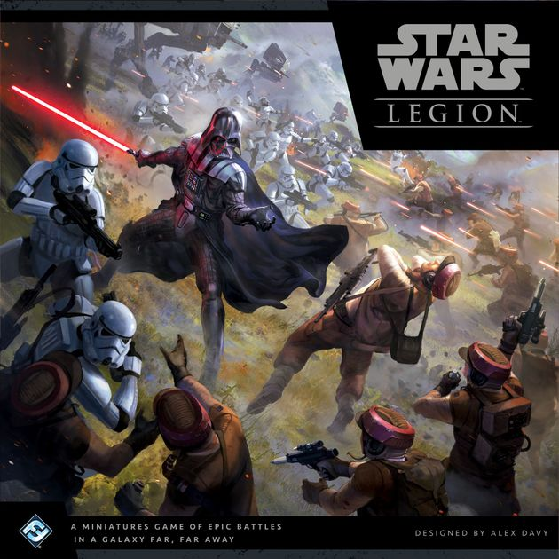

What is Star Wars Legion?
Star Wars Legion is a table-top miniature war game which pits different armies accross the star wars universe in battles against one another. This website has been designed to help new and veteran players and everyone in between learn more about Star Wars Legion. The following page will give short descriptions about the 4 factions found in Star Wars legion.